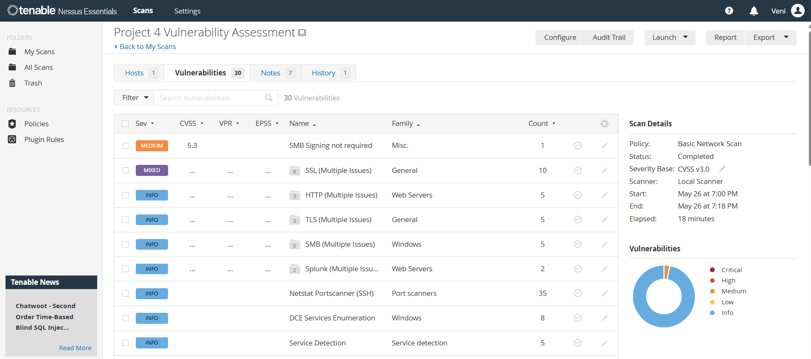
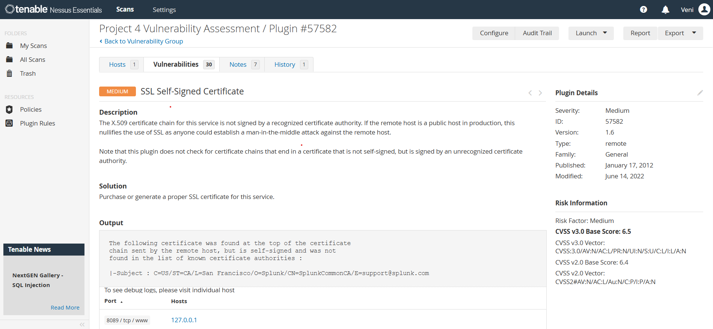
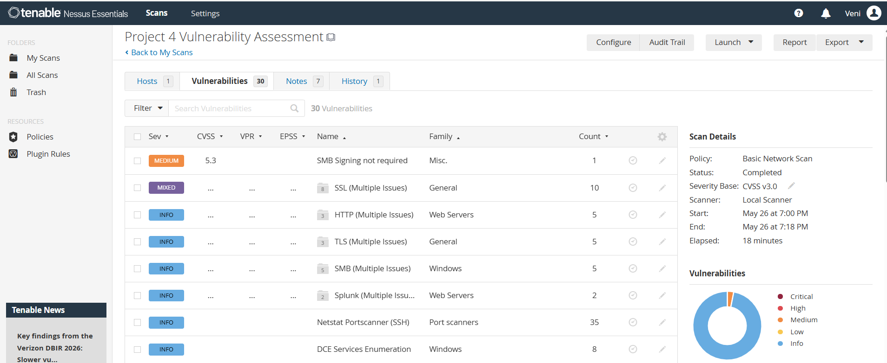

Project 04 / Vulnerability Assessment and Security Analysis Using Nessus Essentials
Performed vulnerability scanning and security assessment using Nessus Essentials.
A cybersecurity portfolio project focused on vulnerability identification, risk assessment, security analysis, and system scanning using Tenable Nessus.
Project Overview
Vulnerability assessment using Nessus Essentials.
A vulnerability assessment was performed using Nessus Essentials to identify potential security weaknesses within the target system. A Basic Network Scan was configured and executed against the local host. Nessus analysed the system and generated a report categorising vulnerabilities based on severity levels such as Critical, High, Medium, and Low.
Configure Nessus scan
Select target host
Execute vulnerability scan
Analyse vulnerabilities
Review severity levels
Document findings
Tools Used
Technologies and tools used in the assessment.
Security Tools
Tenable Nessus
Windows Operating System
Web Browser
Assessment Components
Basic Network Scan
127.0.0.1
Vulnerability Severity Analysis
Vulnerability Assessment
Security vulnerability analysis using Nessus.
Nessus Essentials was used to scan the target system and identify potential vulnerabilities and security risks. The scan results highlighted security weaknesses and provided severity-based analysis.
Scan Type: Basic Network Scan Target Host: 127.0.0.1 Severity Levels: Critical High Medium Low Detected Vulnerability: SSL Self-Signed Certificate
Evidence Gallery
Screenshots and validation evidence from the Nessus assessment.



Assessment Findings
Security weaknesses successfully identified.
Vulnerability Detection
Identified system vulnerabilities and analysed host scan results using Nessus Essentials within a controlled local environment.
Risk Assessment
Analysed vulnerabilities based on severity levels and associated security risks.
SSL Security Analysis
Detected SSL Self-Signed Certificate vulnerability indicating potential trust and certificate validation risks.
Assessment Results
Vulnerability assessment completed successfully using Nessus Essentials.
Assessment Component
Outcome
Target Scan
Successfully scanned localhost system
Vulnerability Detection
Security weaknesses identified successfully
Severity Analysis
Vulnerabilities categorised by risk level
Assessment Status
Vulnerability assessment completed
Skills Demonstrated
Vulnerability Scanning
Performed vulnerability assessment using Nessus Essentials.
Security Analysis
Analysed system vulnerabilities and associated risks.
Risk Identification
Identified potential security weaknesses within the target system.
Assessment Reporting
Documented scan findings and vulnerability assessment results.